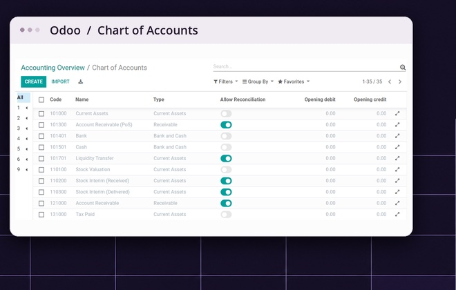
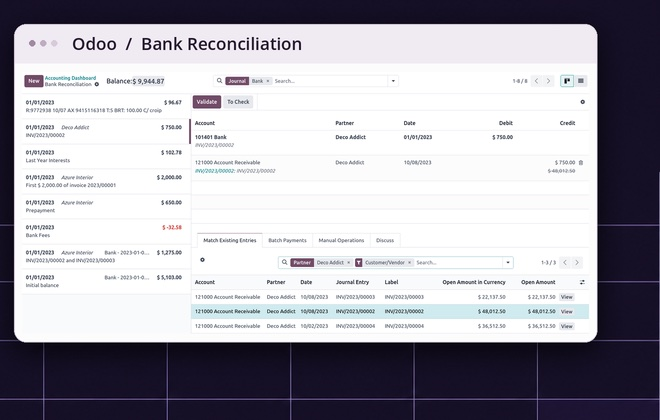
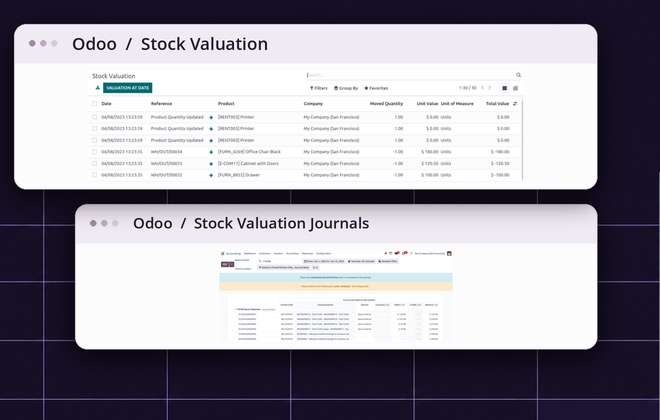
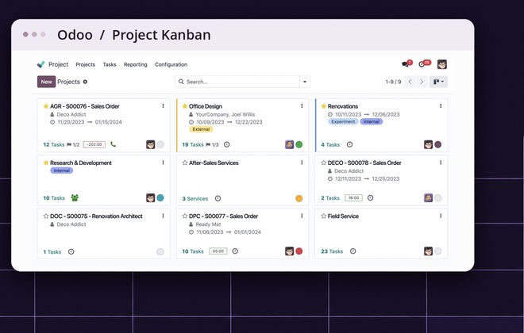
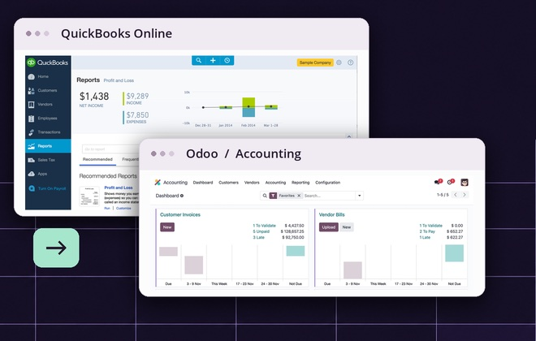
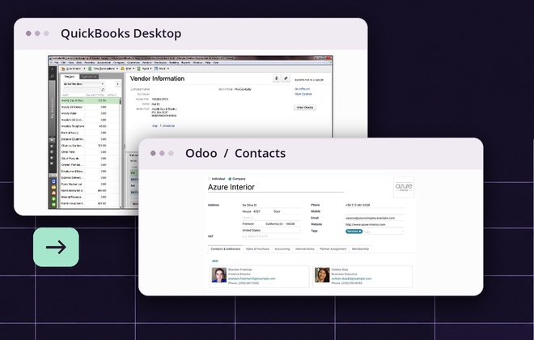

01Odoo Accounting Setup
Opening trial balance agreed to the source records, with receivables and payables visible in Odoo.
View case studyChartered Accountant · Dubai, UAE
Audit. Tax. Odoo. QuickBooks.
I'm a Chartered Accountant (ACA, ICAP) with 8+ years in external audit, accounting and financial advisory across Pakistan and the UAE. I set up and migrate accounting systems so books close on time and every balance ties back to its source.
Cut-over tie-out
Trial balance · Odoo 17
Platforms and standards: Odoo, QuickBooks Online, QuickBooks Desktop, Xero, Zoho Books, Shopify, Stripe, IFRS, ISA, ZATCA e-invoicing.
Know me
I'm Muhammad Shayan, a Chartered Accountant and member of the Institute of Chartered Accountants of Pakistan (ICAP), based in Dubai. Over more than eight years I have worked in external audit, accounting and financial advisory for clients in Pakistan and the UAE.
I founded MMAC & Co. Chartered Accountants, a firm providing audit, tax, accounting and business advisory services. Alongside audit and tax work, I implement and migrate accounting systems, with a focus on Odoo, QuickBooks Online and QuickBooks Desktop, and on the controls that keep them right: reconciliations, clearing accounts, cutover checks and a repeatable month-end close.
8+
Years in audit, accounting and advisory
6
Detailed case studies
12
Sectors served
5
Accounting platforms
Featured case study · 04
Every bank deposit traced back to the orders, fees and refunds behind it.
Where a Shopify order's money goes

Credentials
Qualification
Chartered Accountant (ACA)
Institute of Chartered Accountants of Pakistan (ICAP)
Firm
Founder
MMAC & Co. Chartered Accountants
Practice
8+ years
External audit, accounting and financial advisory
Platforms
Odoo · QuickBooks
Also Xero and Zoho Books
Selected work
Each one comes with a one-page summary and the full implementation report. Client companies are described by type only.

01Opening trial balance agreed to the source records, with receivables and payables visible in Odoo.
View case study
02Margins comparable across categories, with month-end valuation reconciled to the ledger.
View case study
03A monthly P&L, balance sheet and follow-up list, with cash tied to the statements.
View case studyEvery bank deposit traced to the orders, fees and refunds it covers.
View case study
05Odoo's opening balances tie back to QuickBooks, and year-to-date reporting continues in Odoo.
View case study
06Open bills, credits and invoices carried over under one clean master record each.
View case studyExperience
Chartered Accountant (ACA, ICAP) based in Dubai with 8+ years in external audit, accounting and financial advisory across Pakistan and the UAE.
MMAC & Co. Chartered Accountants
Founded and leads a firm providing audit, tax, accounting and business advisory services.
Odoo · QuickBooks Online · QuickBooks Desktop
Pakistan and the UAE
Services
Accounting set-up, journals, opening balances and migrations from QuickBooks Online and QuickBooks Desktop.
Clean books and a dependable close on QuickBooks Online, Xero, Odoo and Zoho Books.
Statutory and internal audits under ISA, IFRS reporting and internal control reviews.
Income tax and sales tax compliance, representation and planning.
Numbers that support decisions: budgets, forecasts, models and investor reporting.
Company registration and secretarial compliance.
Sectors served
Standards & regulators